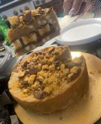

Crunchie pie recipes

- 200g Unsalted soft butter
- 250g Light brown sugar
- 2 Egg yolks
- 1tsp Vanilla extract
- 320g Plain flour
- 1tsp Baking powder
- 100g White chocolate chips
- 150g Crunchies
- 300g Chocolate spread (any brand)
Ingredients
- Preheat fan oven to 160c and line tray (I use an 8inch round tin)
- Mix egg yolks, vanilla, flour and chocolate chips until you get a cookie/dough mixture
- Put 1/3 of your mix to the side (this becomes the pie lid)
- Press the remaining mix into the tins bottom and sides to create the pie base
- Melt the chocolate spread slightly so its runny (10/15 seconds in the microwave should do) pour this into the pie
- Place the crunchie ontop of the chocolate spread
- With the remaining cookie dough roll out a 'lid' that will fit the top of the pie and place ontop ensuring to seal the gap between the lid and the sides
- Bake for 16-18minutes until golden brown allow to cool completely before placing into the fridge overnight